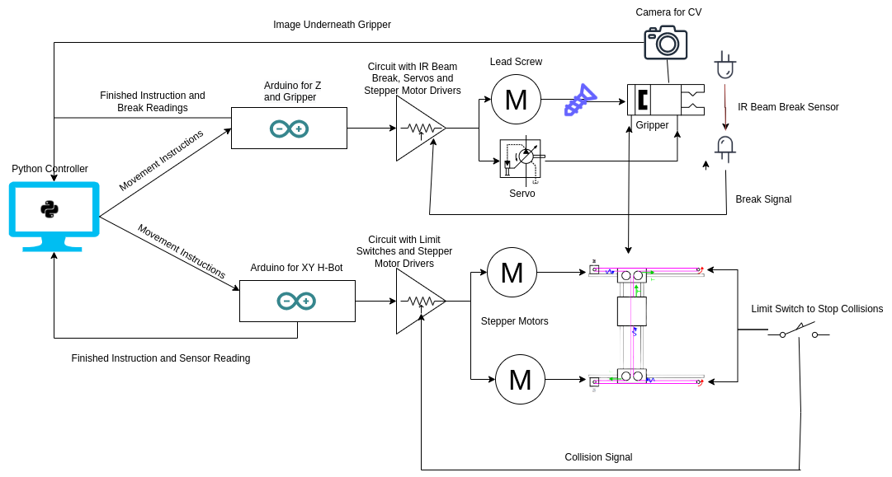
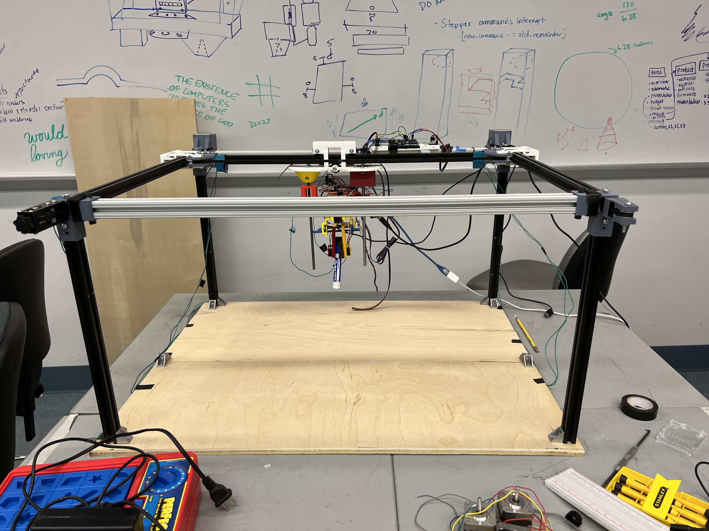

System Overview
There are many different subsystems in DeskBot and the above images show how they are all interconnected and integrated together.
Python Controller
At a very high level, the Python Controller sends instructions to 2 different Arduinos: one that controls the H-bot system and one that controls the gripper. The Arduinos also communicate back to the controller when they finish an instruction and when there is an important sensor reading in the system. The Python Controller also receives images from a camera mounted on the gripper, allowing it to detect objects and make decisions based on the input.
Arduino
The Arduinos communicate to the circuit and to the python controller to execute specific movements and interpret sensor values for the controller. The Arduinos control the directions of the Stepper Motors, giving us x, y and z and gripper movement. It also protects the H-Bot systems from collisions by interpreting limit switch signals and helps to pick up objects by interpreting the beam break signals.
H-Bot Gantry
The H-Bot is run using commands from the Arduino that move the stepper motors, which allows for various motions. The H-Bot also has a carriage that moves the gripper along the xy axis. If the H-Bot hits one of the limit switches a signal is sent to stop the system.
Gripper
The gripper is also using commands from Arduino. It also has a camera mounted that allows for a type of scanning to find different objects that the python controller uses to send instructions.
All of these different systems work together to create the entire DeskBot shown below.
